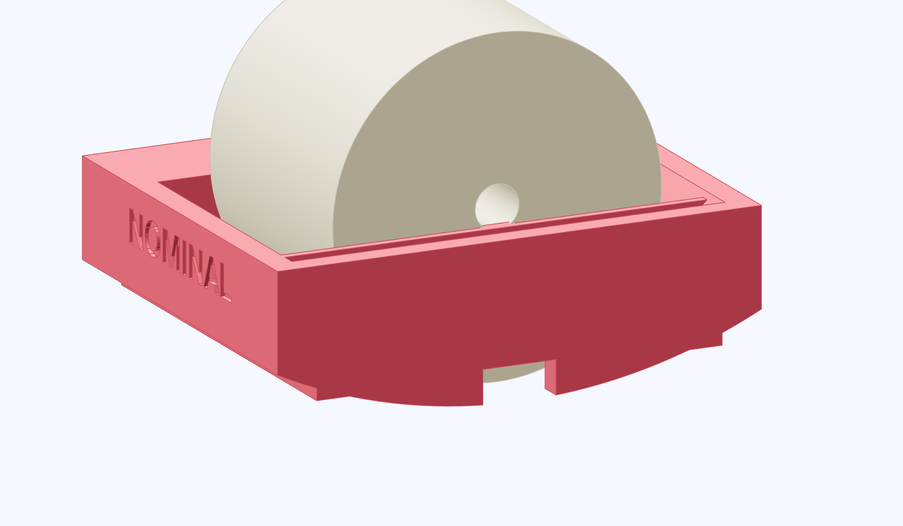

Measure the float gap and roller play
Measure the clearance under the float and the play between the roller and its slot for each sled you use.

- Find the largest gauge pin or smooth drill shank that passes under the float without lifting it or rocking the sled.
- Record the measured gap with the sled name. Compare with that sled's
float_to_wall_gap_mmin the rig datums. - Remove the gauge and sled. Measure the slot along the travel axis and subtract the roller diameter. Record that difference as roller play, then recouple the sled.
Check the running gap
The gauge enters without force and the float clears the tube through the hand sweep. The log reader uses the measured roller play to correct the inward leg.